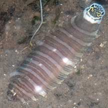
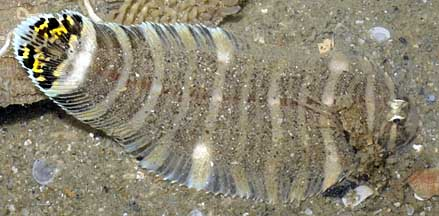
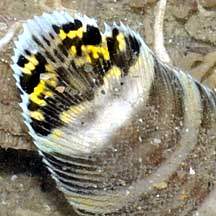
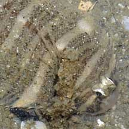

|
|
| fishes text index | photo index |
| Phylum Chordata > Subphylum Vertebrata > fishes > Order Pleuronectiformes > Family Soleidae |
| Zebra
sole Zebrias zebra Family Soleidae updated Oct 2020 Where seen? This wacky striped flatfish is sometimes seen on sandy areas near seagrasses. Features: Those seen 6-10cm, can grow to abot 20cm. Eyes on the right side. Tail fin joined to dorsal and anal fins. Body oval, it has a tiny pectoral fin on the eyed-side. The eyed-side has 10-12 pairs of dark-and-white stripes that extend across to the fins. The tail has bright yellow and black markings. It crawls slowly on the bottom by undulating its dorsal and anal fins, its body covered in sand, but its colouful tail held vertically. Perhaps the tail acts as a lure? Zebrias quagga looks similar. |
 Changi, Aug 17 |
 Changi, Jun 10 |
 Colourful tail! |
 Eyes on the right side. Tiny spines sticking out near the gill covers. |
| What does it eat? It hunts small
animals living on the bottom of the sea, especially small crustaceans. Human uses: It is marketed fresh, frozen and dried-salted. |
 |
| Zebra soles on Singapore shores |
On wildsingapore
flickr
|
Links
References
|